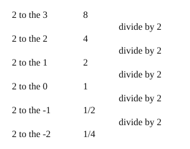

Part of Exponent Rules. Answer in the chat (1: ..., g: c), add sure or guess after any answer, and say done when finished.
Help is down to 2, since 02 and 03 both passed first try: an outline and a picture, no worked example.
R1. Which is 6² × 6⁵?
Last time: going down from 2³ = 8, what is 2⁰? You said a) 0. It is b) 1.

"A power counts copies" stops making sense at zero copies, or fewer. Keep the pattern instead: each step down in the exponent divides by the base once more (notes 4). Keep going past 0 and you get one over a power (notes 5):
a⁻ⁿ = 1/aⁿ
Outline:
Q1. What is 3⁻², as a fraction?
Q2. In your own words: why is 5⁻¹ equal to one fifth, and not -5?
Q3. Rae says 10⁻³ is -1000, since the minus sign makes it negative. What is wrong?